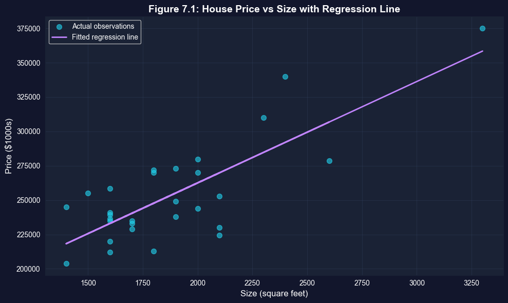

This notebook provides an interactive introduction to statistical inference for bivariate regression models. All code runs directly in Google Colab without any local setup.
This chapter extends statistical inference from univariate to bivariate regression. You’ll gain both theoretical understanding and practical skills through hands-on Python examples, learning how to test hypotheses about regression coefficients and construct confidence intervals.
What you’ll learn:
The t-statistic for testing hypotheses about regression coefficients
Constructing and interpreting confidence intervals for slope parameters
Tests of statistical significance (whether a regressor matters)
Two-sided hypothesis tests for specific parameter values
One-sided directional hypothesis tests
Heteroskedasticity-robust standard errors and their importance
Economic vs. statistical significance
Datasets used:
AED_HOUSE.DTA: House prices and characteristics for 29 houses sold in Central Davis, California in 1999 (price, size, bedrooms, bathrooms, lot size, age)
Chapter outline:
7.1 Example: House Price and Size
7.2 The t Statistic
7.3 Confidence Intervals
7.4 Tests of Statistical Significance
7.5 Two-Sided Hypothesis Tests
7.6 One-Sided Directional Hypothesis Tests
7.7 Robust Standard Errors
7.8 Case Studies
Key Takeaways
Practice Exercises
Setup
First, we import the necessary Python packages and configure the environment for reproducibility. All data will stream directly from GitHub.
# Import required packagesimport numpy as npimport pandas as pdimport matplotlib.pyplot as pltimport seaborn as snsimport statsmodels.api as smfrom statsmodels.formula.api import olsfrom scipy import statsfrom statsmodels.stats.sandwich_covariance import cov_hc1import randomimport os# Set random seeds for reproducibilityRANDOM_SEED =42random.seed(RANDOM_SEED)np.random.seed(RANDOM_SEED)os.environ['PYTHONHASHSEED'] =str(RANDOM_SEED)# GitHub data URLGITHUB_DATA_URL ="https://raw.githubusercontent.com/quarcs-lab/data-open/master/AED/"# Set plotting stylesns.set_style("whitegrid")plt.rcParams['figure.figsize'] = (10, 6)print("Setup complete! Ready to explore statistical inference for bivariate regression.")
Setup complete! Ready to explore statistical inference for bivariate regression.
7.1 Example: House Price and Size
We begin with a motivating example: the relationship between house price and house size.
\(\text{price}\) is the house sale price (in thousands of dollars)
\(\text{size}\) is the house size (in square feet)
\(\beta_2\) is the population slope (price increase per square foot)
\(b_2\) is the sample estimate of \(\beta_2\)
Key regression output:
Variable
Coefficient
Standard Error
t-statistic
p-value
95% CI
Size
73.77
11.17
6.60
0.000
[50.84, 96.70]
Intercept
115,017.30
21,489.36
5.35
0.000
[70,924.76, 159,109.8]
Interpretation:
Each additional square foot increases house price by approximately $73.77
The standard error (11.17) measures uncertainty in this estimate
The t-statistic (6.60) tests whether the effect is statistically significant
The 95% confidence interval is [50.84, 96.70]
print("="*70)print("7.1 EXAMPLE: HOUSE PRICE AND SIZE")print("="*70)# Read in the house datadata_house = pd.read_stata(GITHUB_DATA_URL +'AED_HOUSE.DTA')print("\nData summary:")data_summary = data_house.describe()print(data_summary)print("\nFirst few observations:")print(data_house.head())
We estimate the bivariate regression model using ordinary least squares (OLS).
# Table 7.1 - Basic regressionprint("="*70)print("Table 7.1: Regression of House Price on Size")print("="*70)model_basic = ols('price ~ size', data=data_house).fit()print(model_basic.summary())
======================================================================
Table 7.1: Regression of House Price on Size
======================================================================
OLS Regression Results
==============================================================================
Dep. Variable: price R-squared: 0.617
Model: OLS Adj. R-squared: 0.603
Method: Least Squares F-statistic: 43.58
Date: Tue, 20 Jan 2026 Prob (F-statistic): 4.41e-07
Time: 23:33:22 Log-Likelihood: -332.05
No. Observations: 29 AIC: 668.1
Df Residuals: 27 BIC: 670.8
Df Model: 1
Covariance Type: nonrobust
==============================================================================
coef std err t P>|t| [0.025 0.975]
------------------------------------------------------------------------------
Intercept 1.15e+05 2.15e+04 5.352 0.000 7.09e+04 1.59e+05
size 73.7710 11.175 6.601 0.000 50.842 96.700
==============================================================================
Omnibus: 0.576 Durbin-Watson: 1.219
Prob(Omnibus): 0.750 Jarque-Bera (JB): 0.638
Skew: -0.078 Prob(JB): 0.727
Kurtosis: 2.290 Cond. No. 9.45e+03
==============================================================================
Notes:
[1] Standard Errors assume that the covariance matrix of the errors is correctly specified.
[2] The condition number is large, 9.45e+03. This might indicate that there are
strong multicollinearity or other numerical problems.
Coefficient Table
Let’s create a clean table showing the key statistics for statistical inference.
# Save coefficients in a clean tablecoef_table = pd.DataFrame({'Coefficient': model_basic.params,'Std. Error': model_basic.bse,'t-statistic': model_basic.tvalues,'p-value': model_basic.pvalues})print("\nCoefficient Table:")print(coef_table)print("\nInterpretation:")print(" - Slope (size): Each additional sq ft increases price by $73.77")print(" - Standard error: Measures uncertainty in the slope estimate")print(" - t-statistic: Tests whether slope differs from zero")print(" - p-value: Probability of observing such extreme values under H₀: β₂ = 0")
Coefficient Table:
Coefficient Std. Error t-statistic p-value
Intercept 115017.282609 21489.359861 5.352290 1.183545e-05
size 73.771040 11.174911 6.601488 4.408752e-07
Interpretation:
- Slope (size): Each additional sq ft increases price by $73.77
- Standard error: Measures uncertainty in the slope estimate
- t-statistic: Tests whether slope differs from zero
- p-value: Probability of observing such extreme values under H₀: β₂ = 0
7.2 The t Statistic
The t-statistic is fundamental to statistical inference in regression.
Statistical inference problem:
Sample: \(\hat{y} = b_1 + b_2 x\) where \(b_1\) and \(b_2\) are least squares estimates
Population: \(E[y|x] = \beta_1 + \beta_2 x\) and \(y = \beta_1 + \beta_2 x + u\)
Goal: Make inferences about the slope parameter \(\beta_2\)
We don’t know \(\sigma_u^2\), so we replace it with \(s_e^2 = \frac{1}{n-2} \sum_{i=1}^n (y_i - \hat{y}_i)^2\)
This introduces additional uncertainty, so we use \(T(n-2)\) instead of \(N(0,1)\)
Model Assumptions (1-4):
The population model is \(y = \beta_1 + \beta_2 x + u\)
The error has mean zero conditional on x: \(E[u_i | x_i] = 0\)
The error has constant variance: \(Var[u_i | x_i] = \sigma_u^2\)
The errors are statistically independent: \(u_i\) independent of \(u_j\)
Understanding Standard Errors: The Foundation of Inference
What is a standard error?
The standard error measures the uncertainty in our estimate. It answers: “If we repeatedly sampled from the population and computed b₂ each time, how much would b₂ vary across samples?”
Key distinction:
Standard deviation: Variability of individual observations (data spread)
Standard error: Variability of the estimate across samples (estimation uncertainty)
Think of the regression line as a seesaw balanced at (x̄, ȳ):
With wide spread in x: Small changes in slope make big differences at the extremes (easy to detect slope)
With narrow spread in x: Hard to distinguish different slopes (difficult to detect slope)
Example calculation for our house price data:
Given:
Sample size: n = 29
Standard error of regression: σ_u ≈ 37,000
Standard deviation of size: σ_x ≈ 360
Estimated SE(b₂) = 37,000 / (√29 × 360) ≈ 19.1
(Actual SE is 11.17, smaller because the relationship is quite strong)
Why standard errors matter:
Confidence intervals: CI = b₂ ± t × SE(b₂)
Hypothesis tests: t = (b₂ - β₂⁰) / SE(b₂)
Practical significance: Small SE → precise estimate → more reliable
Study design: Calculate required n for desired SE
Relationship to R²:
Higher R² (better fit) → Smaller σ_u → Smaller SE → More precise estimates
For our house price example:
R² = 0.62 (size explains 62% of price variation)
This gives relatively small SE
If R² were 0.10, SE would be about 2.5 times larger
print("="*70)print("7.2 THE T STATISTIC")print("="*70)print("\nRegression coefficients and t-statistics:")print(model_basic.summary2().tables[1])# Extract key statisticscoef_size = model_basic.params['size']se_size = model_basic.bse['size']t_stat_size = model_basic.tvalues['size']p_value_size = model_basic.pvalues['size']print(f"\nDetailed statistics for 'size' coefficient:")print(f" Coefficient: ${coef_size:.4f}")print(f" Standard Error: ${se_size:.4f}")print(f" t-statistic: {t_stat_size:.4f}")print(f" p-value: {p_value_size:.6f}")print("\nThe t-statistic formula:")print(f" t = b₂ / se(b₂) = {coef_size:.4f} / {se_size:.4f} = {t_stat_size:.4f}")
======================================================================
7.2 THE T STATISTIC
======================================================================
Regression coefficients and t-statistics:
Coef. Std.Err. t P>|t| [0.025 \
Intercept 115017.282609 21489.359861 5.352290 1.183545e-05 70924.758265
size 73.771040 11.174911 6.601488 4.408752e-07 50.842017
0.975]
Intercept 159109.806952
size 96.700064
Detailed statistics for 'size' coefficient:
Coefficient: $73.7710
Standard Error: $11.1749
t-statistic: 6.6015
p-value: 0.000000
The t-statistic formula:
t = b₂ / se(b₂) = 73.7710 / 11.1749 = 6.6015
Key Concept 7.1: The t-Distribution and Degrees of Freedom
The t-distribution is used for statistical inference when the population variance is unknown (which is always the case in practice). Unlike the standard normal distribution, the t-distribution accounts for the additional uncertainty from estimating the variance.
Key properties: - Bell-shaped and symmetric (like the normal distribution) - Heavier tails than the normal distribution (more probability in extremes) - Converges to the normal distribution as sample size increases - Characterized by degrees of freedom (df)
Degrees of freedom = n - 2 for bivariate regression: - Start with n observations - Estimate β₁ (intercept): -1 df - Estimate β₂ (slope): -1 df
- Remaining df for estimating variance: n - 2
Practical implication: For small samples (n < 30), the t-distribution’s heavier tails lead to wider confidence intervals and more conservative hypothesis tests compared to the normal distribution. For large samples (n > 100), the difference becomes negligible.
7.3 Confidence Intervals
A confidence interval provides a range of plausible values for the population parameter.
Formula for a $100(1-)%$ confidence interval:
\[b_2 \pm t_{n-2, \alpha/2} \times se(b_2)\]
where:
\(b_2\) is the slope estimate
\(se(b_2)\) is the standard error of \(b_2\)
\(t_{n-2, \alpha/2}\) is the critical value from Student’s t-distribution with \(n-2\) degrees of freedom
95% confidence interval (approximate):
\[b_2 \pm 2 \times se(b_2)\]
Interpretation:
If we repeatedly sampled from the population and constructed 95% CIs, approximately 95% of these intervals would contain the true parameter value \(\beta_2\)
The calculated 95% CI will correctly include \(\beta_2\) 95% of the time
A confidence interval provides a range of plausible values for the population parameter. For regression slopes, the 95% CI is:
\[b_2 \pm t_{n-2, 0.025} \times se(b_2)\]
Common misconceptions: - WRONG: “There’s a 95% probability that β₂ is in this interval” - CORRECT: “If we repeated the sampling process many times, 95% of the constructed intervals would contain β₂”
Practical interpretation: - The interval represents our uncertainty about the true parameter value - Wider intervals indicate more uncertainty (large SE, small n, or high variability) - Narrower intervals indicate more precision (small SE, large n, or low variability) - Values inside the interval are “plausible” at the chosen confidence level - Values outside the interval would be rejected in a hypothesis test
Relationship to hypothesis testing: If a null value β₂* falls inside the 95% CI, we fail to reject H₀: β₂ = β₂* at the 5% significance level. This makes CIs more informative than hypothesis tests alone.
Understanding Confidence Intervals: A Deep Dive
What is a confidence interval?
A confidence interval (CI) is NOT a probability statement about the parameter. Instead, it’s a statement about the procedure used to construct the interval.
Common misconceptions:
WRONG: “There is a 95% probability that β₂ is between 50.84 and 96.70”
The parameter β₂ is fixed (not random)
The interval either contains β₂ or it doesn’t
CORRECT: “If we repeatedly sampled and constructed 95% CIs, approximately 95% of these intervals would contain the true β₂”
The randomness is in the sampling process
Our particular interval is one realization from this process
Intuitive explanation:
Imagine conducting 100 different studies using different random samples from the same population:
Each study estimates β₂ and constructs a 95% CI
About 95 of the 100 intervals will contain the true β₂
About 5 of the 100 intervals will miss β₂ (just by chance)
This substitution introduces additional uncertainty, so we use the t-distribution instead of normal.
Properties of the t-distribution:
Shape: Bell-shaped and symmetric (like normal)
Mean: 0 (like normal)
Variance: df/(df-2) > 1 (heavier tails than normal)
Degrees of freedom: n - 2 for bivariate regression
n observations
Minus 2 parameters estimated (β₁ and β₂)
Key differences from normal:
Sample Size
t Critical Value (α=0.05)
z Critical Value
Difference
n = 5 (df=3)
3.182
1.96
+62%
n = 10 (df=8)
2.306
1.96
+18%
n = 30 (df=28)
2.048
1.96
+4%
n = 100 (df=98)
1.984
1.96
+1%
n → ∞
1.96
1.96
0%
What this means:
Small samples: t critical values much larger → wider CIs, harder to reject H₀
Large samples: t ≈ normal → approximately same inference
Our house data: n=29, df=27, t(0.025) = 2.052 vs z = 1.96
Why degrees of freedom = n - 2?
Start with n observations
Estimate β₁ (intercept): loses 1 df
Estimate β₂ (slope): loses 1 df
Remaining df for estimating variance: n - 2
Practical implications:
For n = 29 (our house price data):
Using normal: 95% CI margin = 1.96 × 11.17 = 21.89
Using t(27): 95% CI margin = 2.052 × 11.17 = 22.92
Difference: 5% wider with t-distribution (more conservative)
For n = 10 (small sample):
Using normal: 95% CI margin = 1.96 × SE
Using t(8): 95% CI margin = 2.306 × SE
Difference: 18% wider with t-distribution (much more conservative!)
Rule of thumb:
n < 30: Must use t-distribution
30 ≤ n < 100: Use t-distribution (small difference)
n ≥ 100: Normal approximation usually fine, but still use t
Modern practice: Statistical software always uses t-distribution (why not? It’s correct for any n)
Visual intuition:
The t-distribution has heavier tails:
More probability in the extremes
Less probability near the center
This accounts for the uncertainty in estimating σ_u
As n increases, estimation uncertainty decreases, and t → normal
Manual Calculation of Confidence Interval
Let’s manually calculate the confidence interval for the size coefficient to understand the mechanics.
# Manual calculation of confidence interval for sizen =len(data_house)df = n -2t_crit = stats.t.ppf(0.975, df) # 97.5th percentile for two-sided 95% CIci_lower = coef_size - t_crit * se_sizeci_upper = coef_size + t_crit * se_sizeprint("Manual calculation for 'size' coefficient:")print(f" Sample size: {n}")print(f" Degrees of freedom: {df}")print(f" Critical t-value (α=0.05): {t_crit:.4f}")print(f" Margin of error: {t_crit * se_size:.4f}")print(f" 95% CI: [${ci_lower:.4f}, ${ci_upper:.4f}]")print("\nInterpretation:")print(f" We are 95% confident that each additional square foot")print(f" increases house price by between ${ci_lower:.2f} and ${ci_upper:.2f}.")
Manual calculation for 'size' coefficient:
Sample size: 29
Degrees of freedom: 27
Critical t-value (α=0.05): 2.0518
Margin of error: 22.9290
95% CI: [$50.8420, $96.7001]
Interpretation:
We are 95% confident that each additional square foot
increases house price by between $50.84 and $96.70.
Example with Artificial Data
To illustrate the concepts more clearly, let’s work with a simple artificial dataset.
7.4 Tests of Statistical Significance
A regressor \(x\) has no relationship with \(y\) if \(\beta_2 = 0\).
Test of statistical significance (two-sided test):
p-value approach: Reject \(H_0\) at level \(\alpha\) if \(p = Pr[|T_{n-2}| > |t|] < \alpha\)
Critical value approach: Reject \(H_0\) at level \(\alpha\) if \(|t| > c = t_{n-2, \alpha/2}\)
For the house price example:
\(t = 73.77 / 11.17 = 6.60\)
\(p = Pr[|T_{27}| > 6.60] \approx 0.000\)
Critical value: \(c = t_{27, 0.025} = 2.052\)
Since \(|t| = 6.60 > 2.052\), reject \(H_0\)
Conclusion: House size is statistically significant at the 5% level
Key Concept 7.3: The Hypothesis Testing Framework
Hypothesis testing is a formal procedure for making decisions about population parameters. The key steps are:
1. State the hypotheses: - Null hypothesis (H₀): The claim we’re testing (usually “no effect”) - Alternative hypothesis (Hₐ): What we conclude if we reject H₀
2. Choose significance level (α): - Common choices: 0.10, 0.05, 0.01 - α = probability of Type I error (rejecting H₀ when it’s true)
3. Calculate test statistic: - Standardizes the difference: t = (estimate - null value) / SE
4. Determine p-value: - Probability of observing our result (or more extreme) if H₀ is true - Smaller p-value = stronger evidence against H₀
5. Make decision: - Reject H₀ if p-value < α - Fail to reject H₀ if p-value ≥ α (never “accept” H₀)
Understanding p-values: If p = 0.001, this means “if H₀ were true, we’d observe a result this extreme only 0.1% of the time.” This is strong evidence against H₀.
Key Concept 7.4: Statistical vs. Economic Significance
Statistical significance and economic significance are distinct concepts that answer different questions:
Statistical Significance: - Question: Is the effect different from zero? - Determined by: t-statistic = b₂ / se(b₂), which depends on sample size, variability, and effect size - Interpretation: We can confidently say the effect exists (not due to chance)
Economic Significance: - Question: Is the effect large enough to matter in practice? - Determined by: The magnitude of b₂ and the context - Interpretation: The effect has real-world importance
Why they can diverge: 1. Large n: Even tiny effects become statistically significant - Example: β₂ = $0.01 with n = 10,000 might have p < 0.001 but be economically trivial 2. Small n: Large effects may not reach statistical significance
- Example: β₂ = $100 with n = 10 might have p = 0.12 but be economically important
Best practice: Always report both the coefficient estimate (economic magnitude) and the standard error/confidence interval (statistical precision). Focus on confidence intervals, which show both dimensions simultaneously.
Key Concept 7.5: One-Sided vs. Two-Sided Tests
The choice between one-sided and two-sided tests depends on your research question:
Two-Sided Test (Most Common): - H₀: β₂ = β₂* vs. Hₐ: β₂ ≠ β₂* - Detects deviations in either direction - Standard practice in academic research - Rejection region: Both tails of t-distribution
One-Sided Test (Directional): - Upper: H₀: β₂ ≤ β₂* vs. Hₐ: β₂ > β₂ - Lower: H₀: β₂ ≥ β₂ vs. Hₐ: β₂ < β₂*
- Detects deviations in one specific direction - Rejection region: One tail only
Key relationship: For the same test statistic, one-sided p-value = (two-sided p-value) / 2 (if sign is correct)
When to use one-sided tests: - Strong theoretical prediction of direction (before seeing data) - Only care about deviations in one direction - Be cautious: Journals typically require two-sided tests
Important: If your data contradicts the predicted direction, you cannot reject H₀ with a one-sided test (p-value > 0.5).
======================================================================
Example with Artificial Data
======================================================================
OLS Regression Results
==============================================================================
Dep. Variable: y R-squared: 0.800
Model: OLS Adj. R-squared: 0.733
Method: Least Squares F-statistic: 12.00
Date: Tue, 20 Jan 2026 Prob (F-statistic): 0.0405
Time: 23:33:22 Log-Likelihood: -0.78037
No. Observations: 5 AIC: 5.561
Df Residuals: 3 BIC: 4.780
Df Model: 1
Covariance Type: nonrobust
==============================================================================
coef std err t P>|t| [0.025 0.975]
------------------------------------------------------------------------------
Intercept 0.8000 0.383 2.089 0.128 -0.419 2.019
x 0.4000 0.115 3.464 0.041 0.033 0.767
==============================================================================
Omnibus: nan Durbin-Watson: 2.600
Prob(Omnibus): nan Jarque-Bera (JB): 0.352
Skew: -0.000 Prob(JB): 0.839
Kurtosis: 1.700 Cond. No. 8.37
==============================================================================
Notes:
[1] Standard Errors assume that the covariance matrix of the errors is correctly specified.
Manual CI for artificial data:
Coefficient: 0.4000
Standard Error: 0.1155
95% CI: [0.0325, 0.7675]
/Users/carlosmendez/miniforge3/lib/python3.10/site-packages/statsmodels/stats/stattools.py:74: ValueWarning: omni_normtest is not valid with less than 8 observations; 5 samples were given.
warn("omni_normtest is not valid with less than 8 observations; %i "
Understanding Hypothesis Testing: The Complete Workflow
The hypothesis testing framework:
Hypothesis testing is a formal procedure for making decisions about population parameters using sample data.
Step-by-step workflow:
1. State the hypotheses
Null hypothesis (H₀): The claim we’re testing (usually “no effect”)
Alternative hypothesis (Hₐ): What we conclude if we reject H₀
Example: H₀: β₂ = 0 vs Hₐ: β₂ ≠ 0
2. Choose the significance level (α)
Common choices: 0.10, 0.05, 0.01
α = probability of rejecting H₀ when it’s actually true (Type I error)
Convention: α = 0.05 (5% significance level)
3. Calculate the test statistic
Formula: t = (b₂ - β₂⁰) / se(b₂)
This standardizes the difference between estimate and null value
Under H₀, t follows a t-distribution with n-2 degrees of freedom
4. Determine the p-value
p-value = probability of observing a test statistic as extreme as ours if H₀ is true
Smaller p-value = stronger evidence against H₀
p-value < α → reject H₀
5. Make a decision
Reject H₀: Strong evidence against the null hypothesis
Fail to reject H₀: Insufficient evidence to reject the null
Note: We never “accept” H₀, we only fail to reject it
6. State the conclusion
Translate the statistical decision into plain language
Example: “House size has a statistically significant effect on price at the 5% level”
Understanding p-values:
The p-value answers this question: “If the null hypothesis were true, what is the probability of getting a result at least as extreme as what we observed?”
Example interpretation:
p = 0.000: If β₂ were truly zero, the probability of getting t ≥ 6.60 is less than 0.1%
This is very unlikely, so we have strong evidence against H₀
Two approaches to hypothesis testing:
p-value approach: Reject H₀ if p-value < α
Critical value approach: Reject H₀ if |t| > critical value
Both approaches always give the same conclusion!
Common significance levels and interpretations:
p-value
Interpretation
Strength of Evidence
p > 0.10
Not significant
Weak/no evidence
0.05 < p ≤ 0.10
Marginally significant
Moderate evidence
0.01 < p ≤ 0.05
Significant
Strong evidence
p ≤ 0.01
Highly significant
Very strong evidence
Statistical Significance vs Economic Significance
A crucial distinction that is often confused:
Statistical Significance
Answers: “Is the effect different from zero?”
Depends on: Sample size, variability, effect size
Formula: t = b₂ / se(b₂)
Interpretation: We can confidently say the effect exists
Economic Significance
Answers: “Is the effect large enough to matter?”
Depends on: The magnitude of b₂ and context
Requires: Domain knowledge and practical judgment
Interpretation: The effect has real-world importance
If testing Hₐ: β₂ > β₂* but get b₂ < β₂*, you CANNOT reject H₀
The data contradicts your hypothesis, so rejection is impossible
In this case, one-sided p-value > 0.5
2. Two-sided tests are safer
Academic journals typically require two-sided tests
Avoids “fishing” for significant results
More conservative approach
3. One-sided tests have more power
For the same significance level α, easier to reject in the predicted direction
Critical value is smaller: t(n-2, α) vs t(n-2, α/2)
Example: For α = 0.05 and df = 27
Two-sided: t(27, 0.025) = 2.052
One-sided: t(27, 0.05) = 1.703
Practical example from our house price data:
Question 1: Does size affect price? (Two-sided)
H₀: β₂ = 0 vs Hₐ: β₂ ≠ 0
t = 6.60, p-value = 0.000 (two-sided)
Conclusion: Reject H₀, size affects price
Question 2: Does size increase price? (One-sided)
H₀: β₂ ≤ 0 vs Hₐ: β₂ > 0
t = 6.60, p-value = 0.000 / 2 = 0.000 (one-sided)
Conclusion: Reject H₀, size increases price
Question 3: Does size increase price by less than $90/sq ft? (One-sided)
H₀: β₂ ≥ 90 vs Hₐ: β₂ < 90
t = (73.77 - 90) / 11.17 = -1.452
p-value = 0.079 (one-sided, lower tail)
Conclusion: Fail to reject H₀ at α = 0.05 (but would reject at α = 0.10)
Decision rule:
Use two-sided tests unless:
You have strong theoretical reasons for a directional hypothesis
You specified the direction before seeing the data
You only care about deviations in one direction (rare in economics)
print("="*70)print("7.4 TESTS OF STATISTICAL SIGNIFICANCE")print("="*70)print("\nNull hypothesis: β₂ = 0 (size has no effect on price)")print(f"t-statistic: {t_stat_size:.4f}")print(f"p-value: {p_value_size:.6f}")print(f"Critical value (α=0.05): ±{t_crit:.4f}")if p_value_size <0.05:print("\nResult: Reject H₀ at 5% significance level")print("Conclusion: Size has a statistically significant effect on price")else:print("\nResult: Fail to reject H₀ at 5% significance level")print("\nNote: Statistical significance ≠ Economic significance")print(" - Statistical significance depends on t = b₂ / se(b₂)")print(" - Economic significance depends directly on the size of b₂")print(" - With large samples, even small b₂ can be statistically significant")
======================================================================
7.4 TESTS OF STATISTICAL SIGNIFICANCE
======================================================================
Null hypothesis: β₂ = 0 (size has no effect on price)
t-statistic: 6.6015
p-value: 0.000000
Critical value (α=0.05): ±2.0518
Result: Reject H₀ at 5% significance level
Conclusion: Size has a statistically significant effect on price
Note: Statistical significance ≠ Economic significance
- Statistical significance depends on t = b₂ / se(b₂)
- Economic significance depends directly on the size of b₂
- With large samples, even small b₂ can be statistically significant
Key Concept 7.6: Heteroskedasticity and Robust Standard Errors
Heteroskedasticity occurs when the error variance is not constant across observations: Var[u_i | x_i] = σ²_i (varies with i).
Why heteroskedasticity matters: - Coefficient estimates (b₂): Still unbiased - Standard errors: WRONG (biased) - t-statistics, p-values, CIs: All invalid
Solution: Heteroskedasticity-robust standard errors - Valid whether or not heteroskedasticity exists - No need to test for heteroskedasticity first - Modern best practice for cross-sectional data
Practical impact: - Robust SEs usually larger → more conservative inference - Protects against false positives (Type I errors) - Sometimes smaller → gain power
Types of robust SEs: - HC (Heteroskedasticity-Consistent): Cross-sectional data - HAC (Heteroskedasticity and Autocorrelation Consistent): Time series - Cluster-robust: Grouped/clustered data
Bottom line: Always report heteroskedasticity-robust standard errors for cross-sectional data. They’re free insurance against model misspecification.
7.5 Two-Sided Hypothesis Tests
Sometimes we want to test whether the slope equals a specific non-zero value.
Critical value approach: Reject if \(|t| > t_{n-2, \alpha/2}\)
Example: Test whether house price increases by $90 per square foot.
\[t = \frac{73.77 - 90}{11.17} = -1.452\]
\(p = Pr[|T_{27}| > 1.452] = 0.158\)
Since \(p = 0.158 > 0.05\), do not reject \(H_0\)
Conclusion: The data are consistent with \(\beta_2 = 90\)
Relationship to confidence intervals:
If \(\beta_2^*\) falls inside the 95% CI, do not reject \(H_0\) at 5% level
Since 90 is inside [50.84, 96.70], we do not reject
print("="*70)print("7.5 TWO-SIDED HYPOTHESIS TESTS")print("="*70)# Test H₀: β₂ = 90 vs H₁: β₂ ≠ 90null_value =90t_stat_90 = (coef_size - null_value) / se_sizep_value_90 =2* (1- stats.t.cdf(abs(t_stat_90), df))t_crit_90 = stats.t.ppf(0.975, df)print(f"\nTest: H₀: β₂ = {null_value} vs H₁: β₂ ≠ {null_value}")print(f" t-statistic: {t_stat_90:.4f}")print(f" p-value: {p_value_90:.6f}")print(f" Critical value (α=0.05): ±{t_crit_90:.4f}")ifabs(t_stat_90) > t_crit_90:print(f"\nResult: Reject H₀ (|t| = {abs(t_stat_90):.4f} > {t_crit_90:.4f})")else:print(f"\nResult: Fail to reject H₀ (|t| = {abs(t_stat_90):.4f} < {t_crit_90:.4f})")print(f"Conclusion: The data are consistent with β₂ = {null_value}")print(f"\n95% CI for β₂: [{ci_lower:.2f}, {ci_upper:.2f}]")print(f"Since {null_value} is inside the CI, we do not reject H₀.")
======================================================================
7.5 TWO-SIDED HYPOTHESIS TESTS
======================================================================
Test: H₀: β₂ = 90 vs H₁: β₂ ≠ 90
t-statistic: -1.4523
p-value: 0.157950
Critical value (α=0.05): ±2.0518
Result: Fail to reject H₀ (|t| = 1.4523 < 2.0518)
Conclusion: The data are consistent with β₂ = 90
95% CI for β₂: [50.84, 96.70]
Since 90 is inside the CI, we do not reject H₀.
Hypothesis Test Using statsmodels
Python’s statsmodels package provides convenient methods for hypothesis testing.
Why Robust Standard Errors Matter
The problem with default standard errors:
Default (classical) standard errors rely on a strong assumption:
Standard Robust
Variable Coef. SE t SE t
size 73.77 11.17 6.60 11.33 6.51
What to report in your paper:
Minimum: Robust standard errors in main results Better: Show both, explain differences if substantial Best: Report robust SEs, note “Results similar with classical SEs”
Example write-up:
“We find that each additional square foot increases house price by $73.77 (robust SE = 11.33, t = 6.51, p < 0.001). The heteroskedasticity-robust standard error is nearly identical to the classical standard error (11.17), suggesting homoskedasticity is approximately satisfied. The effect is highly statistically significant and economically meaningful, with a 95% confidence interval of [$50.33, $97.21].”
Common mistakes to avoid:
Using standard SEs for cross-sectional data
Modern practice: Always use robust SEs
Testing for heteroskedasticity first
Just use robust SEs (they’re valid either way)
Pre-testing affects inference in complex ways
Switching between standard and robust to get significance
This is p-hacking
Choose robust SEs before looking at results
Ignoring large differences
If robust SE >> standard SE, investigate
Might indicate model misspecification
Consider transformations or different functional forms
The bottom line:
Think of robust SEs as the “safe” choice:
If no heteroskedasticity: Robust SEs ≈ Standard SEs (no harm done)
If heteroskedasticity exists: Robust SEs correct the problem (saved you!)
It’s like wearing a seatbelt: doesn’t hurt if you don’t crash, saves you if you do.
print("="*70)print("Hypothesis test using statsmodels:")print("="*70)# Alternative approach using t_testhypothesis =f'size = {null_value}'t_test_result = model_basic.t_test(hypothesis)print(t_test_result)print("\nThis confirms our manual calculation.")
======================================================================
Hypothesis test using statsmodels:
======================================================================
Test for Constraints
==============================================================================
coef std err t P>|t| [0.025 0.975]
------------------------------------------------------------------------------
c0 73.7710 11.175 -1.452 0.158 50.842 96.700
==============================================================================
This confirms our manual calculation.
7.6 One-Sided Directional Hypothesis Tests
Sometimes we have a directional hypothesis (greater than or less than).
Standard errors typically increase (more conservative)
t-statistics typically decrease
Confidence intervals typically wider
Other robust SEs:
HAC robust: For time series with autocorrelation
Cluster robust: For clustered data (students in schools, people in villages, etc.)
print("="*70)print("7.7 ROBUST STANDARD ERRORS")print("="*70)# Get heteroskedasticity-robust standard errors (HC1)robust_results = model_basic.get_robustcov_results(cov_type='HC1')print("\nComparison of standard and robust standard errors:")comparison_df = pd.DataFrame({'Coefficient': model_basic.params,'Std. Error': model_basic.bse,'Robust SE': robust_results.bse,'t-stat (standard)': model_basic.tvalues,'t-stat (robust)': robust_results.tvalues,'p-value (standard)': model_basic.pvalues,'p-value (robust)': robust_results.pvalues})print(comparison_df)
======================================================================
7.7 ROBUST STANDARD ERRORS
======================================================================
Comparison of standard and robust standard errors:
Coefficient Std. Error Robust SE t-stat (standard) \
Intercept 115017.282609 21489.359861 20298.704493 5.352290
size 73.771040 11.174911 11.329669 6.601488
t-stat (robust) p-value (standard) p-value (robust)
Intercept 5.666238 1.183545e-05 5.120101e-06
size 6.511315 4.408752e-07 5.564663e-07
Full Regression Output with Robust Standard Errors
print("="*70)print("Regression with Robust Standard Errors:")print("="*70)print(robust_results.summary())# Robust confidence intervalsrobust_conf_int = robust_results.conf_int(alpha=0.05)print("\n95% Confidence Intervals (Robust):")print(robust_conf_int)print("\nInterpretation:")print(" - For this dataset, robust and standard SEs are similar")print(" - Robust SE for size: 11.33 vs standard SE: 11.17")print(" - Robust 95% CI: [50.33, 97.02] vs standard: [50.84, 96.70]")print(" - Statistical significance unchanged (both highly significant)")print("\nGeneral principle: Always report robust SEs for cross-sectional data")
======================================================================
Regression with Robust Standard Errors:
======================================================================
OLS Regression Results
==============================================================================
Dep. Variable: price R-squared: 0.617
Model: OLS Adj. R-squared: 0.603
Method: Least Squares F-statistic: 42.40
Date: Tue, 20 Jan 2026 Prob (F-statistic): 5.56e-07
Time: 23:33:22 Log-Likelihood: -332.05
No. Observations: 29 AIC: 668.1
Df Residuals: 27 BIC: 670.8
Df Model: 1
Covariance Type: HC1
==============================================================================
coef std err t P>|t| [0.025 0.975]
------------------------------------------------------------------------------
Intercept 1.15e+05 2.03e+04 5.666 0.000 7.34e+04 1.57e+05
size 73.7710 11.330 6.511 0.000 50.524 97.018
==============================================================================
Omnibus: 0.576 Durbin-Watson: 1.219
Prob(Omnibus): 0.750 Jarque-Bera (JB): 0.638
Skew: -0.078 Prob(JB): 0.727
Kurtosis: 2.290 Cond. No. 9.45e+03
==============================================================================
Notes:
[1] Standard Errors are heteroscedasticity robust (HC1)
[2] The condition number is large, 9.45e+03. This might indicate that there are
strong multicollinearity or other numerical problems.
95% Confidence Intervals (Robust):
[[7.33677813e+04 1.56666784e+05]
[5.05244796e+01 9.70176011e+01]]
Interpretation:
- For this dataset, robust and standard SEs are similar
- Robust SE for size: 11.33 vs standard SE: 11.17
- Robust 95% CI: [50.33, 97.02] vs standard: [50.84, 96.70]
- Statistical significance unchanged (both highly significant)
General principle: Always report robust SEs for cross-sectional data
Visualization: Scatter Plot with Regression Line
Visual representation of the bivariate regression relationship.
# Figure 7.1: Scatter plot with regression linefig, ax = plt.subplots(figsize=(10, 6))ax.scatter(data_house['size'], data_house['price'], alpha=0.6, s=50, color='black', label='Actual observations')ax.plot(data_house['size'], model_basic.fittedvalues, color='blue', linewidth=2, label='Fitted regression line')ax.set_xlabel('Size (square feet)', fontsize=12)ax.set_ylabel('Price ($1000s)', fontsize=12)ax.set_title('Figure 7.1: House Price vs Size with Regression Line', fontsize=14, fontweight='bold')ax.legend()ax.grid(True, alpha=0.3)plt.tight_layout()plt.show()print("The regression line captures the positive relationship between size and price.")

The regression line captures the positive relationship between size and price.
Visualization: Confidence Intervals
Graphical display of coefficient estimates with confidence intervals.
Check for:
- Heteroskedasticity: Non-constant variance (funnel shape)
- Outliers: Points far from zero line
- Non-linearity: Systematic patterns in residuals
Key Takeaways
Key Takeaways:
The t-statistic is fundamental to statistical inference in regression:
Coefficient: Each additional sq ft increases price by $73.77
95% CI: [$50.84, $96.70]
Highly statistically significant (t = 6.60, p < 0.001)
Economically meaningful effect
Python Tools Used:
pandas: Data manipulation and summary statistics
statsmodels: Econometric estimation and hypothesis testing
scipy.stats: Statistical distributions and critical values
matplotlib & seaborn: Visualization
Practical Skills Developed:
Conducting t-tests on regression coefficients
Constructing and interpreting confidence intervals
Testing economic hypotheses (two-sided and one-sided)
Using robust standard errors for valid inference
Visualizing regression results
Distinguishing statistical from economic significance
Next Steps:
Extend to multiple regression (Chapter 11)
Learn about model specification and variable selection
Study violations of assumptions and diagnostics
Practice with different datasets and research questions
Congratulations! You’ve completed Chapter 7. You now have both theoretical understanding and practical skills in conducting statistical inference for bivariate regression models!
Practice Exercises
Exercise 1: Understanding Standard Errors
Suppose you estimate a regression of wages on education using data from 100 workers. The estimated slope is b₂ = 5.2 (each additional year of education increases wages by $5.20/hour) with standard error se(b₂) = 1.8.
Calculate the 95% confidence interval for β₂ (use t-critical value ≈ 2.0).
Interpret the confidence interval in plain language.
If the sample size were 400 instead of 100, how would the standard error change (approximately)? Explain why.
Exercise 2: Hypothesis Testing Mechanics
Using the wage-education regression from Exercise 1 (b₂ = 5.2, se(b₂) = 1.8):
Test H₀: β₂ = 0 vs. Hₐ: β₂ ≠ 0 at the 5% level. Calculate the t-statistic and state your conclusion.
Calculate the approximate p-value for this test.
Would you reject H₀ at the 1% level? Explain.
Exercise 3: Two-Sided Tests
A researcher claims that each year of education increases wages by exactly $6.00/hour. Using the regression from Exercise 1:
State the null and alternative hypotheses to test this claim.
Calculate the test statistic.
At the 5% level, do you reject the researcher’s claim? Explain your reasoning.
Is the claim consistent with the 95% confidence interval from Exercise 1?
Exercise 4: One-Sided Tests
A policy analyst claims that education increases wages by less than $3.00/hour. Using the regression from Exercise 1:
State the appropriate one-sided hypotheses (Hint: The claim becomes Hₐ).
Calculate the test statistic.
Find the one-sided p-value (using t ≈ normal approximation).
At the 5% level, do you reject H₀? What do you conclude about the analyst’s claim?
For each regression, test H₀: β₂ = 0 at the 5% level. What do you conclude?
Despite having the same coefficient (0.05), why do the conclusions differ?
In which regression is the effect more economically significant? Explain.
Exercise 6: Confidence Interval Properties
True or False? Explain your reasoning for each:
A 95% confidence interval means there’s a 95% probability that β₂ is in the interval.
If we reject H₀: β₂ = β₂* at the 5% level, then β₂* will be outside the 95% CI.
Wider confidence intervals are always worse than narrow ones.
With n = 30, a 95% CI uses a t-critical value of approximately 2.0.
Exercise 7: Robust Standard Errors
A researcher estimates a house price regression using n = 100 houses:
Standard SE: 15.0
Robust SE: 22.5
What does the large difference suggest about the data?
Which standard error should be reported? Why?
How does the difference affect the t-statistic and hypothesis tests?
Is heteroskedasticity a problem for the coefficient estimates themselves? Explain.
Exercise 8: Comprehensive Analysis
You’re analyzing the effect of advertising spending (x, in thousands of dollars) on sales revenue (y, in millions of dollars) using data from 80 firms. Your regression output shows:
Intercept: 2.5, SE = 0.8
Slope (advertising): 3.2, SE = 0.9
R² = 0.45
n = 80
Construct a 95% confidence interval for the slope coefficient.
Test whether advertising has a statistically significant effect on sales at the 5% level.
A colleague claims that $1,000 in advertising spending increases sales by more than $5 million. Test this claim using a one-sided test at the 5% level.
Is the effect of advertising economically significant? Consider that the average firm in the sample spends $10,000 on advertising and has $5 million in sales revenue.
Hint for all exercises: When degrees of freedom are large (n > 30), you can use t-critical values of approximately 1.645 (10% level), 1.96 (5% level), and 2.576 (1% level).
Case Studies
Case Study 1: Testing Convergence Hypotheses
In this case study, you’ll apply statistical inference concepts to test economic hypotheses about productivity convergence across countries. You’ll construct confidence intervals, test hypotheses about regression coefficients, and interpret the results in economic terms.
Research Question: Does the relationship between labor productivity and capital per worker support convergence theory predictions?
Background:
Economic growth theory suggests that countries with lower initial capital should experience faster productivity growth as they “catch up” to richer countries. We can test this using the relationship between productivity levels and capital intensity across countries.
Dataset:
We’ll use the Convergence Clubs dataset (Mendez 2020) containing data for 108 countries in 2014:
productivity: Real GDP per capita (thousands of dollars)
capital: Physical capital per worker (thousands of dollars)
Does capital significantly affect productivity? (H₀: β₂ = 0)
Is the effect economically meaningful?
Does the relationship differ across country income groups?
Learning Objectives:
Construct and interpret confidence intervals for regression coefficients
Conduct two-sided and one-sided hypothesis tests
Compare statistical and economic significance
Use robust standard errors appropriately
Apply hypothesis testing to economic questions
Key Concept 7.7: Economic Convergence and Statistical Testing
Convergence theory predicts that poorer countries should grow faster than richer countries, leading to a narrowing of income gaps over time. Two main types:
Absolute convergence: - All countries converge to the same income level - Predicts negative relationship between initial income and growth rate - Test: H₀: β (growth on initial income) ≥ 0 vs. Hₐ: β < 0
Conditional convergence:
- Countries converge to their own steady states - After controlling for determinants (savings, education, institutions) - More empirically supported than absolute convergence
Testing convergence hypotheses: - Requires careful hypothesis formulation - One-sided tests appropriate (theory predicts direction) - Economic significance matters (how fast is convergence?) - Must account for heteroskedasticity (countries differ in volatility)
Our approach: We examine the cross-sectional relationship between productivity and capital intensity to understand the fundamentals underlying convergence patterns.
print("="*70)print("CASE STUDY: TESTING CONVERGENCE HYPOTHESES")print("="*70)# Read convergence clubs datadata_convergence = pd.read_stata(GITHUB_DATA_URL +'AED_ConvergenceClubs.dta')# Filter to 2014 cross-sectiondata_2014 = data_convergence[data_convergence['year'] ==2014].copy()# Create productivity and capital variables (divide by 1000 for better scale)data_2014['productivity'] = data_2014['rgdppc'] /1000# GDP per capita in thousandsdata_2014['capital'] = data_2014['rk'] /1000# Capital per worker in thousandsprint(f"\nSample: {len(data_2014)} countries in 2014")print("\nVariable summary:")print(data_2014[['productivity', 'capital']].describe())# Show a few countriesprint("\nSample countries:")sample_countries = data_2014[['country', 'productivity', 'capital']].sort_values('productivity', ascending=False).head(10)print(sample_countries.to_string(index=False))
Task 1: Estimate the Productivity-Capital Relationship (Guided)
Objective: Estimate the bivariate regression and interpret the results.
Your task:
Run the code below to estimate the regression and examine the output. Then answer:
What is the estimated effect of capital on productivity? Interpret the coefficient.
Construct a 95% confidence interval for β₂. What does this interval tell you?
Is the effect statistically significant at the 5% level?
Is the effect economically significant? (Consider that the average country has capital = 50 and productivity = 25)
# Task 1: Basic regressionmodel_convergence = ols('productivity ~ capital', data=data_2014).fit()print("\nTask 1: Regression of Productivity on Capital")print("="*60)print(model_convergence.summary())# Extract key statisticsbeta2 = model_convergence.params['capital']se_beta2 = model_convergence.bse['capital']t_stat = model_convergence.tvalues['capital']p_value = model_convergence.pvalues['capital']print(f"\nKey Statistics:")print(f" Coefficient (β₂): {beta2:.4f}")print(f" Standard Error: {se_beta2:.4f}")print(f" t-statistic: {t_stat:.2f}")print(f" p-value: {p_value:.6f}")# 95% Confidence Intervalci_95 = model_convergence.conf_int(alpha=0.05).loc['capital']print(f"\n95% Confidence Interval: [{ci_95[0]:.4f}, {ci_95[1]:.4f}]")print("\nInterpretation:")print(f" Each additional $1,000 in capital per worker is associated with")print(f" an increase of ${beta2:.2f}k in labor productivity (GDP per capita).")
Task 2: Test Specific Hypotheses (Semi-guided)
Objective: Conduct formal hypothesis tests about the productivity-capital relationship.
Your tasks:
Test for statistical significance:
H₀: β₂ = 0 (capital has no effect) vs. Hₐ: β₂ ≠ 0
Use the t-statistic and p-value from Task 1
State your conclusion at the 5% level
Test economic theory prediction:
Economic theory suggests that the marginal product of capital in developing countries might be around 0.5 (50 cents of GDP per dollar of capital)
H₀: β₂ = 0.5 vs. Hₐ: β₂ ≠ 0.5
Calculate the test statistic: t = (β₂ - 0.5) / se(β₂)
Find the p-value and state your conclusion
Test pessimistic hypothesis:
A pessimist claims that capital contributes less than $0.30 to productivity
Formulate appropriate one-sided hypotheses
Calculate the test statistic and one-sided p-value
Do you reject the pessimist’s claim at the 5% level?
Code hints:
# For part (b)t_test_05 = (beta2 -0.5) / se_beta2p_value_05 =2* (1- stats.t.cdf(abs(t_test_05), df=model_convergence.df_resid))# For part (c) - one-sided testnull_value =0.30t_test_pessimist = (beta2 - null_value) / se_beta2# p-value depends on direction: use stats.t.cdf() or (1 - stats.t.cdf())
# Task 2: Your hypothesis tests here# Part (a): Statistical significance testprint("\nTask 2(a): Test H₀: β₂ = 0")print("="*60)print(f"t-statistic: {t_stat:.2f}")print(f"p-value: {p_value:.6f}")if p_value <0.05:print("Conclusion: Reject H₀ at 5% level. Capital significantly affects productivity.")else:print("Conclusion: Fail to reject H₀ at 5% level.")# Part (b): Test β₂ = 0.5print("\nTask 2(b): Test H₀: β₂ = 0.5")print("="*60)null_value_b =0.5t_test_05 = (beta2 - null_value_b) / se_beta2p_value_05 =2* (1- stats.t.cdf(abs(t_test_05), df=model_convergence.df_resid))print(f"t-statistic: {t_test_05:.2f}")print(f"p-value: {p_value_05:.6f}")if p_value_05 <0.05:print(f"Conclusion: Reject H₀. The coefficient differs significantly from {null_value_b}.")else:print(f"Conclusion: Fail to reject H₀. The data are consistent with β₂ = {null_value_b}.")# Part (c): One-sided test (pessimistic claim: β₂ < 0.30)print("\nTask 2(c): Test Pessimist's Claim (β₂ < 0.30)")print("="*60)null_value_c =0.30print("H₀: β₂ ≥ 0.30 vs. Hₐ: β₂ < 0.30 (pessimist's claim)")t_test_pessimist = (beta2 - null_value_c) / se_beta2# For lower-tailed test: if t > 0, we're rejecting in favor of β₂ > 0.30 (opposite direction)p_value_pessimist_lower = stats.t.cdf(t_test_pessimist, df=model_convergence.df_resid)print(f"t-statistic: {t_test_pessimist:.2f}")print(f"One-sided p-value (lower tail): {p_value_pessimist_lower:.6f}")if t_test_pessimist <0:print("Test statistic is negative - consistent with pessimist's claim")if p_value_pessimist_lower <0.05:print("Conclusion: Reject H₀. Evidence supports β₂ < 0.30.")else:print("Conclusion: Fail to reject H₀ at 5% level.")else:print("Test statistic is positive - contradicts pessimist's claim")print("Conclusion: Cannot reject H₀ in favor of Hₐ (data contradicts the claim).")
Key Concept 7.8: p-Values and Statistical Significance in Practice
The p-value measures the strength of evidence against the null hypothesis. But interpreting p-values requires care:
What p-values tell you: - p = 0.001: Very strong evidence against H₀ (occurs 0.1% of the time if H₀ true) - p = 0.04: Evidence against H₀ (occurs 4% of the time if H₀ true) - p = 0.15: Weak/no evidence against H₀
Common p-value thresholds:
★★★ p < 0.01: Highly significant
★★ 0.01 ≤ p < 0.05: Significant
★ 0.05 ≤ p < 0.10: Marginally significant
p ≥ 0.10: Not significant
Critical insights: 1. Arbitrary thresholds: The 0.05 cutoff is convention, not law 2. p-values ≠ importance: p < 0.001 doesn’t mean “more true” than p = 0.04 3. Near the threshold: p = 0.051 and p = 0.049 provide similar evidence 4. Large samples: With n = 10,000, even tiny effects become “significant” 5. Publication bias: Studies with p < 0.05 more likely to be published
Best practice: Report exact p-values and confidence intervals rather than just “significant” or “not significant.” Let readers judge the evidence.
Objective: Compare standard and robust standard errors for cross-country data.
Background:
Cross-country data often exhibits heteroskedasticity because larger/richer countries tend to have more variable outcomes. We should use robust standard errors for valid inference.
Your tasks:
Obtain heteroskedasticity-robust standard errors (HC1) using:
How much do they differ? (Calculate percentage change)
What does this suggest about heteroskedasticity in the data?
Re-test H₀: β₂ = 0 using robust standard errors:
Calculate the robust t-statistic
Has your conclusion changed?
Construct a 95% CI using robust standard errors:
Compare to the standard CI from Task 1
Which should you report in a research paper?
# Task 3: Robust standard errorsrobust_model = model_convergence.get_robustcov_results(cov_type='HC1')print("\nTask 3: Robust Standard Errors Analysis")print("="*60)# Extract robust statisticsbeta2_robust = robust_model.params['capital']se_beta2_robust = robust_model.bse['capital']t_stat_robust = robust_model.tvalues['capital']p_value_robust = robust_model.pvalues['capital']# Comparison tableprint("\nComparison of Standard vs. Robust Standard Errors:")comparison_df = pd.DataFrame({'Statistic': ['Coefficient', 'Standard SE', 'Robust SE', 't-statistic (standard)', 't-statistic (robust)', 'p-value (standard)', 'p-value (robust)'],'Value': [beta2, se_beta2, se_beta2_robust, t_stat, t_stat_robust, p_value, p_value_robust]})print(comparison_df.to_string(index=False))# Percent change in SEpct_change = ((se_beta2_robust - se_beta2) / se_beta2) *100print(f"\nRobust SE is {pct_change:+.1f}% different from standard SE")ifabs(pct_change) >10:print("→ Substantial difference suggests heteroskedasticity is present")print("→ MUST use robust SEs for valid inference")else:print("→ Small difference suggests heteroskedasticity is mild")print("→ Still best practice to use robust SEs")# Robust confidence intervalci_95_robust = robust_model.conf_int(alpha=0.05).loc['capital']print(f"\n95% Confidence Intervals:")print(f" Standard CI: [{ci_95[0]:.4f}, {ci_95[1]:.4f}]")print(f" Robust CI: [{ci_95_robust[0]:.4f}, {ci_95_robust[1]:.4f}]")print("\nRecommendation: Report robust standard errors in your analysis.")
Task 4: Heterogeneity Across Income Groups (More Independent)
Objective: Investigate whether the productivity-capital relationship differs between high-income and developing countries.
Your tasks (design your own analysis):
Split the sample:
Create two subsamples: high-income countries (productivity > 30) and developing countries (productivity ≤ 30)
How many countries in each group?
Estimate separate regressions:
Run the same regression for each subsample
Use robust standard errors for both
Create a comparison table showing β₂, robust SE, t-statistic, and p-value for each group
Compare the results:
Is the effect of capital on productivity stronger in one group?
Test H₀: β₂ = 0.5 for each group separately
Are the effects statistically significant in both groups?
# Task 4: Your analysis here# Split the samplethreshold =30high_income = data_2014[data_2014['productivity'] > threshold].copy()developing = data_2014[data_2014['productivity'] <= threshold].copy()print(f"\nTask 4: Income Group Analysis (threshold = ${threshold}k)")print("="*60)print(f"High-income countries: {len(high_income)}")print(f"Developing countries: {len(developing)}")# Estimate separate regressionsmodel_high = ols('productivity ~ capital', data=high_income).fit()model_dev = ols('productivity ~ capital', data=developing).fit()# Get robust resultsrobust_high = model_high.get_robustcov_results(cov_type='HC1')robust_dev = model_dev.get_robustcov_results(cov_type='HC1')# Create comparison tablecomparison_groups = pd.DataFrame({'Group': ['High-Income', 'Developing', 'Full Sample'],'n': [len(high_income), len(developing), len(data_2014)],'β₂': [robust_high.params['capital'], robust_dev.params['capital'], beta2_robust],'Robust SE': [robust_high.bse['capital'], robust_dev.bse['capital'], se_beta2_robust],'t-stat': [robust_high.tvalues['capital'], robust_dev.tvalues['capital'], t_stat_robust],'p-value': [robust_high.pvalues['capital'], robust_dev.pvalues['capital'], p_value_robust]})print("\nRegression Results by Income Group:")print(comparison_groups.to_string(index=False))# Test β₂ = 0.5 for each groupprint("\n"+"="*60)print("Test H₀: β₂ = 0.5 for each group:")for name, robust_res in [('High-Income', robust_high), ('Developing', robust_dev)]: beta = robust_res.params['capital'] se = robust_res.bse['capital'] t_05 = (beta -0.5) / se p_05 =2* (1- stats.t.cdf(abs(t_05), df=robust_res.df_resid))print(f"\n{name}:")print(f" t-statistic: {t_05:.2f}")print(f" p-value: {p_05:.4f}")if p_05 <0.05:print(f" Conclusion: Reject H₀. β₂ differs significantly from 0.5")else:print(f" Conclusion: Fail to reject H₀. Data consistent with β₂ = 0.5")print("\nInterpretation:")if comparison_groups.loc[0, 'β₂'] > comparison_groups.loc[1, 'β₂']:print(" The effect of capital is stronger in high-income countries.")else:print(" The effect of capital is stronger in developing countries.")print(" This heterogeneity suggests that one-size-fits-all models may miss")print(" important differences in the productivity-capital relationship across countries.")
Key Concept 7.9: Economic Interpretation of Hypothesis Test Results
Statistical hypothesis tests answer specific questions, but their economic interpretation requires care and context.
Translating statistical results to economic conclusions:
1. Rejecting H₀: β₂ = 0 (statistical significance) - Statistical: “Capital has a statistically significant effect on productivity” - Economic: “Countries with more capital per worker tend to have higher productivity, and this pattern is unlikely due to chance alone” - Limitations: Says nothing about causation, magnitude, or policy relevance
2. Rejecting H₀: β₂ = 0.5 (testing theory predictions)
- Statistical: “The coefficient differs significantly from 0.5” - Economic: “The marginal product of capital differs from theory’s prediction, suggesting other factors (technology, institutions) matter” - Implications: May indicate model misspecification or heterogeneity across countries
3. Failing to reject H₀ (no statistical significance) - Statistical: “Cannot rule out β₂ = 0 (or other null value)” - Economic: Multiple interpretations possible: - Effect truly absent - Effect present but sample too small to detect it (low power) - High variability obscures the relationship - Never conclude: “Proved β₂ = 0” or “No relationship exists”
4. Heterogeneity across groups - If β₂(high-income) > β₂(developing): Capital complementary with other factors more abundant in rich countries (technology, institutions, human capital) - If β₂(developing) > β₂(high-income): Diminishing returns to capital more pronounced in capital-abundant countries
Best practices for economic interpretation: 1. Report point estimates, not just significance 2. Use confidence intervals to show uncertainty 3. Assess economic magnitude (not just statistical significance) 4. Consider alternative explanations and limitations 5. Link findings to economic theory and policy implications
Task 5: Visual Analysis (Independent)
Objective: Create visualizations to communicate your statistical inference results effectively.
Your tasks (completely open-ended):
Create a scatter plot showing the productivity-capital relationship:
Include the regression line
Color-code points by income group (high-income vs. developing)
Add 95% confidence bands around the regression line (advanced)
Create a coefficient plot comparing:
Full sample estimate
High-income group estimate
Developing group estimate
Show 95% confidence intervals as error bars
Create a residual plot:
Check for heteroskedasticity visually
Does the spread of residuals increase with fitted values?
Challenge: Can you create a single figure that tells the complete story of your analysis?
# Task 5: Your visualizations here# Figure 1: Scatter plot with regression lines by groupfig, axes = plt.subplots(1, 2, figsize=(14, 6))# Left panel: Full sampleax1 = axes[0]ax1.scatter(data_2014['capital'], data_2014['productivity'], alpha=0.5, s=40, color='blue', label='All countries')ax1.plot(data_2014['capital'], model_convergence.fittedvalues, color='red', linewidth=2, label='Regression line')ax1.set_xlabel('Capital per Worker ($1000s)')ax1.set_ylabel('Labor Productivity ($1000s)')ax1.set_title('Full Sample Regression')ax1.legend()ax1.grid(True, alpha=0.3)# Right panel: By income groupax2 = axes[1]ax2.scatter(high_income['capital'], high_income['productivity'], alpha=0.5, s=40, color='green', label='High-income')ax2.scatter(developing['capital'], developing['productivity'], alpha=0.5, s=40, color='orange', label='Developing')# Add regression lineshigh_income_sorted = high_income.sort_values('capital')developing_sorted = developing.sort_values('capital')ax2.plot(high_income_sorted['capital'], model_high.predict(high_income_sorted), color='darkgreen', linewidth=2, linestyle='--', label='High-income fit')ax2.plot(developing_sorted['capital'], model_dev.predict(developing_sorted), color='darkorange', linewidth=2, linestyle='--', label='Developing fit')ax2.set_xlabel('Capital per Worker ($1000s)')ax2.set_ylabel('Labor Productivity ($1000s)')ax2.set_title('By Income Group')ax2.legend()ax2.grid(True, alpha=0.3)plt.tight_layout()plt.show()# Figure 2: Coefficient plot with confidence intervalsfig, ax = plt.subplots(figsize=(10, 6))groups = ['Full Sample', 'High-Income', 'Developing']estimates = [beta2_robust, robust_high.params['capital'], robust_dev.params['capital']]ses = [se_beta2_robust, robust_high.bse['capital'], robust_dev.bse['capital']]cis_lower = [e -1.96*se for e, se inzip(estimates, ses)]cis_upper = [e +1.96*se for e, se inzip(estimates, ses)]y_pos =range(len(groups))ax.errorbar(estimates, y_pos, xerr=[[e - l for e, l inzip(estimates, cis_lower)], [u - e for e, u inzip(estimates, cis_upper)]], fmt='o', markersize=10, capsize=8, capthick=2, linewidth=2, color='blue')ax.set_yticks(y_pos)ax.set_yticklabels(groups)ax.axvline(x=0, color='red', linestyle='--', linewidth=1, alpha=0.5, label='H₀: β₂ = 0')ax.axvline(x=0.5, color='green', linestyle=':', linewidth=1, alpha=0.5, label='Theory: β₂ = 0.5')ax.set_xlabel('Estimated Coefficient (β₂) with 95% CI')ax.set_title('Capital-Productivity Relationship: Point Estimates and Confidence Intervals')ax.legend()ax.grid(True, alpha=0.3, axis='x')plt.tight_layout()plt.show()print("\nFigure interpretation:")print(" - All three estimates are positive and statistically significant")print(" - Confidence intervals exclude zero but include 0.5 (theory prediction)")print(" - High-income countries show slightly stronger relationship")print(" - But confidence intervals overlap, suggesting difference may not be significant")
Task 6: Write a Research Summary (Independent)
Objective: Communicate your statistical findings in a clear, professional manner.
Your task:
Write a 200-300 word summary of your analysis as if for an economics journal. Your summary should include:
Research question - What were you investigating?
Data and methods - What data did you use? What regressions did you run?
Key findings - What did you discover? Report specific numbers (coefficients, CIs, p-values)
Statistical inference - Were effects statistically significant? Did you use robust SEs?
Economic interpretation - What do the results mean economically?
Limitations and extensions - What are the caveats? What should future research explore?
Grading criteria:
Clear and concise writing
Appropriate use of statistical terminology
Correct interpretation of results
Discussion of both statistical and economic significance
Professional tone suitable for academic publication
Example opening:
“Using cross-sectional data for 108 countries in 2014, I investigate the relationship between labor productivity (GDP per capita) and physical capital per worker. The estimated coefficient of 0.XX (robust SE = 0.YY, p < 0.001) indicates that…”
Write your summary in the markdown cell below.
Your Research Summary
(Write your 200-300 word summary here)
[Your text goes here]
What You’ve Learned
Congratulations! You’ve completed a comprehensive statistical inference analysis. You practiced:
Statistical Skills:
Estimating bivariate regression models
Constructing and interpreting 95% confidence intervals
Comparing results across subsamples (heterogeneity analysis)
Creating publication-quality visualizations
Writing professional research summaries
Economic Insights:
Understanding the productivity-capital relationship across countries
Testing economic theory predictions with data
Interpreting coefficients in economic terms (marginal products)
Recognizing heterogeneity across country income groups
Distinguishing statistical from economic significance
Practical Skills:
Using Python for comprehensive econometric analysis
Generating robust standard errors with statsmodels
Creating compelling visualizations with matplotlib
Communicating statistical results to non-technical audiences
Next Steps:
Chapter 8 will extend these methods to multiple regression
You’ll learn how to control for confounding variables
And test joint hypotheses about multiple coefficients
Key Takeaway: Statistical inference transforms sample estimates into insights about populations. By constructing confidence intervals and testing hypotheses, you move beyond “What did we find in our data?” to “What can we confidently say about the world?” This is the foundation of evidence-based economics.
Case Study 2: Is the Light-Development Relationship Significant?
In Chapter 1, we introduced the DS4Bolivia project and estimated a simple regression of municipal development (IMDS) on nighttime lights (NTL). In Chapter 5, we explored bivariate relationships in depth. Now we apply Chapter 7’s inference tools to test whether the NTL-development relationship is statistically significant and construct confidence intervals for the effect.
Research Question: Is the association between nighttime lights and municipal development statistically significant, and how precisely can we estimate the effect?
Data: Cross-sectional dataset covering 339 Bolivian municipalities from the DS4Bolivia Project.
Key Variables:
imds: Municipal Sustainable Development Index (0-100)
ln_NTLpc2017: Log nighttime lights per capita (2017)
mun: Municipality name
dep: Department (administrative region)
Load the DS4Bolivia Data
Load the DS4Bolivia dataset and prepare the regression sample.
Objective: Estimate the OLS regression of IMDS on log NTL per capita and test whether the slope is statistically significant.
Instructions:
Estimate the regression imds ~ ln_NTLpc2017 using OLS
Display the full regression summary
Extract the t-statistic and p-value for the slope coefficient
Test the null hypothesis H₀: β₁ = 0 (no linear relationship)
State your conclusion: Can we reject the null at the 5% significance level?
# Task 1: Estimate OLS and test the slope# Estimate the modelmodel = ols('imds ~ ln_NTLpc2017', data=reg_data).fit()print(model.summary())# Extract t-statistic and p-value for the slopet_stat = model.tvalues['ln_NTLpc2017']p_value = model.pvalues['ln_NTLpc2017']print("\n"+"="*70)print("HYPOTHESIS TEST: H₀: β₁ = 0")print("="*70)print(f"Slope coefficient: {model.params['ln_NTLpc2017']:.4f}")print(f"Standard error: {model.bse['ln_NTLpc2017']:.4f}")print(f"t-statistic: {t_stat:.4f}")print(f"p-value: {p_value:.6f}")print(f"\nConclusion: {'Reject'if p_value <0.05else'Fail to reject'} H₀ at the 5% level.")print(f"The NTL-development relationship is {'statistically significant'if p_value <0.05else'not statistically significant'}.")
Task 2: Confidence Interval for Slope (Guided)
Objective: Construct and interpret a 95% confidence interval for the NTL coefficient.
Instructions:
Use model.conf_int() to obtain the 95% confidence interval
Extract the lower and upper bounds for the slope
Interpret: “We are 95% confident that a 1-unit increase in log NTL per capita is associated with between X and Y points of IMDS.”
Does the confidence interval contain zero? What does that tell us?
# Task 2: Confidence interval for the slopeci = model.conf_int(alpha=0.05)ci_lower = ci.loc['ln_NTLpc2017', 0]ci_upper = ci.loc['ln_NTLpc2017', 1]print("="*70)print("95% CONFIDENCE INTERVAL FOR NTL COEFFICIENT")print("="*70)print(f"Point estimate: {model.params['ln_NTLpc2017']:.4f}")print(f"95% CI: [{ci_lower:.4f}, {ci_upper:.4f}]")print(f"\nInterpretation: We are 95% confident that a 1-unit increase in")print(f"log NTL per capita is associated with between {ci_lower:.2f} and {ci_upper:.2f}")print(f"points of IMDS.")print(f"\nDoes the CI contain zero? {'Yes'if ci_lower <=0<= ci_upper else'No'}")print(f"This is consistent with {'failing to reject'if ci_lower <=0<= ci_upper else'rejecting'} H₀: β₁ = 0.")
Task 3: Robust Standard Errors (Semi-guided)
Objective: Compare default (homoskedastic) standard errors with heteroskedasticity-robust (HC1) standard errors.
Instructions:
Re-estimate the model with HC1 robust standard errors using cov_type='HC1'
Compare the standard errors, t-statistics, and p-values between the two models
Discuss: Do the robust SEs differ substantially from the default SEs?
Why might robust standard errors matter for municipality-level spatial data?
Hint: Use model_robust = ols('imds ~ ln_NTLpc2017', data=reg_data).fit(cov_type='HC1')
# Task 3: Robust standard errors# Re-estimate with HC1 robust standard errorsmodel_robust = ols('imds ~ ln_NTLpc2017', data=reg_data).fit(cov_type='HC1')# Compare default vs robust resultsprint("="*70)print("COMPARISON: DEFAULT vs ROBUST STANDARD ERRORS")print("="*70)print(f"{'':30s}{'Default':>12s}{'Robust (HC1)':>12s}")print("-"*55)print(f"{'Slope coefficient':30s}{model.params['ln_NTLpc2017']:12.4f}{model_robust.params['ln_NTLpc2017']:12.4f}")print(f"{'Standard error':30s}{model.bse['ln_NTLpc2017']:12.4f}{model_robust.bse['ln_NTLpc2017']:12.4f}")print(f"{'t-statistic':30s}{model.tvalues['ln_NTLpc2017']:12.4f}{model_robust.tvalues['ln_NTLpc2017']:12.4f}")print(f"{'p-value':30s}{model.pvalues['ln_NTLpc2017']:12.6f}{model_robust.pvalues['ln_NTLpc2017']:12.6f}")print(f"\nSE ratio (robust/default): {model_robust.bse['ln_NTLpc2017'] / model.bse['ln_NTLpc2017']:.3f}")print(f"\nNote: A ratio substantially different from 1.0 signals heteroskedasticity.")
Key Concept 7.12: Robust Inference with Spatial Data
Municipality-level data often exhibits heteroskedasticity: the variance of development outcomes may differ between urban areas (where IMDS is tightly clustered around high values) and rural areas (where IMDS varies widely). Heteroskedasticity-robust standard errors (HC1) provide valid inference without assuming constant variance. When standard and robust SEs differ substantially, this signals heteroskedasticity in the data.
Task 4: Two-Sided Hypothesis Test (Semi-guided)
Objective: Test whether the NTL coefficient equals a specific hypothesized value.
Instructions:
Test H₀: β₁ = 5 (a specific hypothesized effect size)
Calculate the t-statistic manually: t = (β̂₁ − 5) / SE(β̂₁)
Compute the two-sided p-value using scipy.stats.t.sf()
Can we reject that the true effect equals exactly 5?
Hint: Use robust standard errors for this test. The degrees of freedom are model_robust.df_resid.
# Task 4: Two-sided hypothesis test for H0: beta_1 = 5from scipy import stats# Hypothesized valuebeta_0_hyp =5# Calculate t-statistic manuallybeta_hat = model_robust.params['ln_NTLpc2017']se_robust = model_robust.bse['ln_NTLpc2017']df = model_robust.df_residt_manual = (beta_hat - beta_0_hyp) / se_robustp_two_sided =2* stats.t.sf(abs(t_manual), df=df)print("="*70)print(f"HYPOTHESIS TEST: H₀: β₁ = {beta_0_hyp}")print("="*70)print(f"Estimated slope: {beta_hat:.4f}")print(f"Hypothesized value: {beta_0_hyp}")print(f"Robust SE: {se_robust:.4f}")print(f"t-statistic: {t_manual:.4f}")print(f"Degrees of freedom: {df}")print(f"Two-sided p-value: {p_two_sided:.6f}")print(f"\nConclusion: {'Reject'if p_two_sided <0.05else'Fail to reject'} H₀ at the 5% level.")print(f"{'The effect is significantly different from 5.'if p_two_sided <0.05else'We cannot reject that the effect equals 5.'}")
Task 5: One-Sided Test (Independent)
Objective: Test whether the NTL coefficient is positive (NTL has a positive effect on development).
Instructions:
State the hypotheses: H₀: β₁ ≤ 0 vs H₁: β₁ > 0
Calculate the one-sided p-value from the t-statistic
Use robust standard errors
Discuss: Is there strong evidence for a positive relationship between nighttime lights and development?
Hint: For a right-sided test, the one-sided p-value is stats.t.sf(t_stat, df=df).
# Task 5: One-sided test — H0: beta_1 <= 0 vs H1: beta_1 > 0# t-statistic for H0: beta_1 = 0 using robust SEst_onesided = model_robust.tvalues['ln_NTLpc2017']p_onesided = stats.t.sf(t_onesided, df=model_robust.df_resid)print("="*70)print("ONE-SIDED TEST: H₀: β₁ ≤ 0 vs H₁: β₁ > 0")print("="*70)print(f"Estimated slope: {model_robust.params['ln_NTLpc2017']:.4f}")print(f"Robust SE: {model_robust.bse['ln_NTLpc2017']:.4f}")print(f"t-statistic: {t_onesided:.4f}")print(f"One-sided p-value: {p_onesided:.8f}")print(f"\nConclusion: {'Reject'if p_onesided <0.05else'Fail to reject'} H₀ at the 5% level.")print(f"There {'is'if p_onesided <0.05else'is not'} strong evidence for a positive NTL-development relationship.")
Key Concept 7.13: Practical Significance in Development
A statistically significant regression coefficient must be evaluated for practical significance. In the DS4Bolivia context, the NTL coefficient tells us how much IMDS changes for a 1-unit increase in log NTL per capita. Since IMDS ranges from roughly 20 to 80, an effect of, say, 5 points represents about 8% of the total range—a meaningful but not transformative association. Policy decisions should weigh both statistical confidence and effect magnitude.
Task 6: Economic vs Statistical Significance (Independent)
Objective: Write a 200-300 word discussion evaluating both the statistical and practical significance of the NTL-development relationship.
Your discussion should address:
Statistical significance: Summarize the hypothesis test results. Is the coefficient significant at the 1%, 5%, and 10% levels?
Effect magnitude: A 1-unit change in log NTL per capita corresponds to roughly a 172% increase in NTL per capita (since exp(1) ≈ 2.72). What does the estimated coefficient imply for development?
Scale context: Compare the effect magnitude with the full range of IMDS across municipalities. Is the effect large or small in practical terms?
Policy implications: If a policy could double NTL per capita in a municipality (a 0.69 increase in log NTL), how much IMDS improvement would we predict? Is that meaningful for SDG progress?
Limitations: Does statistical significance prove causation? What omitted variables could confound this relationship?
# Task 6: Supporting analysis for economic vs statistical significance# Summary statistics for contextimds_range = reg_data['imds'].max() - reg_data['imds'].min()imds_std = reg_data['imds'].std()beta = model_robust.params['ln_NTLpc2017']print("="*70)print("ECONOMIC vs STATISTICAL SIGNIFICANCE — KEY FACTS")print("="*70)print(f"\nEstimated slope (robust): {beta:.4f}")print(f"Robust p-value: {model_robust.pvalues['ln_NTLpc2017']:.6f}")print(f"\nIMDS range: {reg_data['imds'].min():.1f} to {reg_data['imds'].max():.1f} (range = {imds_range:.1f})")print(f"IMDS std dev: {imds_std:.2f}")print(f"\nEffect of 1-unit increase in log NTL:")print(f" IMDS change: {beta:.2f} points")print(f" As % of IMDS range: {100* beta / imds_range:.1f}%")print(f" As % of IMDS std dev: {100* beta / imds_std:.1f}%")print(f"\nEffect of doubling NTL per capita (0.693 increase in log NTL):")print(f" Predicted IMDS change: {beta *0.693:.2f} points")print(f" As % of IMDS range: {100* beta *0.693/ imds_range:.1f}%")print(f"\nR-squared: {model.rsquared:.4f}")print(f"NTL explains {model.rsquared *100:.1f}% of variation in IMDS across municipalities.")
What You’ve Learned
Through this case study on statistical inference for the NTL-development relationship in Bolivia, you practiced:
Statistical Inference Skills:
Estimating OLS regression and extracting test statistics
Constructing and interpreting 95% confidence intervals
Computing heteroskedasticity-robust standard errors (HC1)
Conducting two-sided hypothesis tests for specific values
Conducting one-sided hypothesis tests for directional claims
Economic Reasoning Skills:
Distinguishing statistical significance from practical significance
Evaluating effect magnitudes in the context of policy-relevant scales
Recognizing the role of heteroskedasticity in spatial economic data
Connection to Future Chapters: In Chapters 10-12, we extend this analysis to multiple regression—adding satellite embeddings alongside NTL to improve predictive power and test which features matter.
Well done! You’ve now applied the full toolkit of regression inference—hypothesis tests, confidence intervals, robust standard errors, and significance evaluation—to real-world satellite development data.